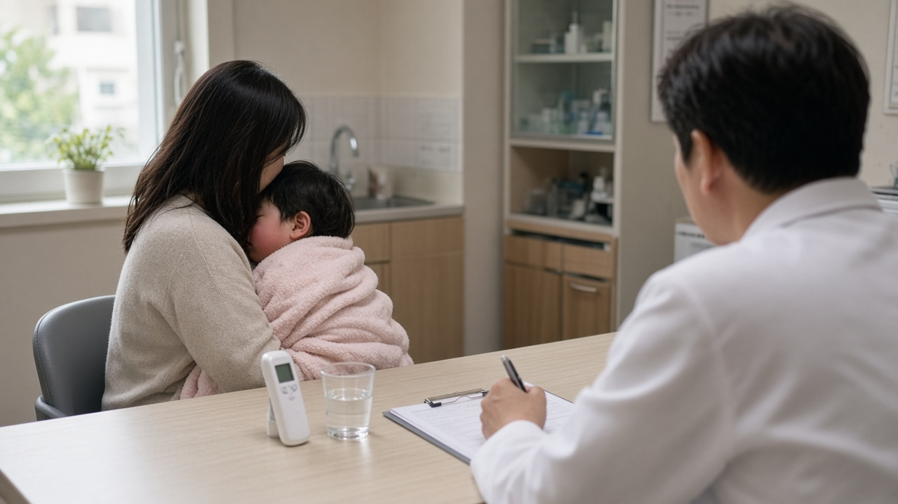
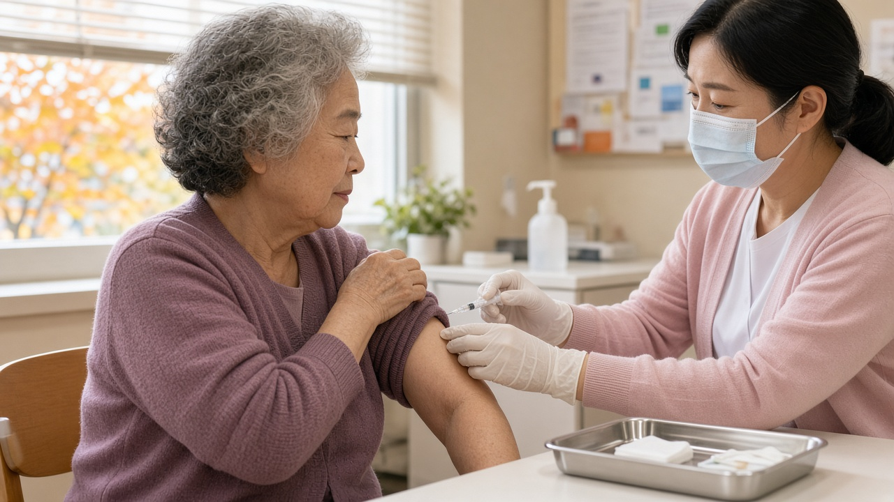

독감 유행주의보 기간 타미플루, 검사 없이 건강보험 되는 사람과 48시간 기준

아이가 밤새 열이 오르고 기침을 하면 다음 날 아침 병원부터 찾게 되죠.
그런데 독감 검사를 꼭 해야 약을 받을 수 있는지, 검사비와 약값은 얼마나 나오는지 헷갈리는 분들이 많아요.
올해는 독감 유행주의보가 9월 11일에 일찍 내려졌고 지금도 이어지고 있어서, 이 기간에만 적용되는 건강보험 기준을 알아 두면 꽤 도움이 돼요. 누가 해당되는지, 언제까지 진료를 받아야 하는지 정리해 볼게요.
유행주의보가 내려지면 고위험군은 검사 없이도 보험이 돼요
평소에는 독감 치료제에 건강보험이 적용되려면 신속항원검사나 유전자검사로 독감 양성이 확인돼야 해요.
그런데 질병관리청이 인플루엔자 유행주의보를 발령한 기간에는 고위험군 환자가 의심 증상만 있어도 의사 판단에 따라 항바이러스제를 처방받을 때 건강보험이 적용돼요.
대상 약은 두 가지예요. 먹는 약인 오셀타미비르 성분, 흔히 타미플루로 알려진 캡슐과 흡입해서 쓰는 자나미비르 성분 약이에요.
기준에 맞지 않으면 약값 전액을 환자가 내야 한다고 고시에 적혀 있으니, 내가 해당되는지부터 아는 게 중요해요.
참고로 검사에서 양성이 나온 환자라면 유행주의보와 상관없이 언제든 보험이 적용돼요.
어떤 사람이 고위험군에 들어가나요
먹는 약 기준으로 보면 만 9세 이하 어린이, 임신부와 출산 2주 이내 산모, 만 65세 이상 어르신이 먼저 해당돼요.
여기에 면역저하자와 당뇨 같은 대사장애, 심장질환, 폐질환, 신장기능장애, 간질환, 혈액질환, 신경계질환과 신경발달 장애가 있는 분도 포함돼요.
장기간 아스피린 치료를 받고 있는 만 19세 이하 환자도 대상이에요.
흡입하는 약은 기준이 조금 달라서 만 7세 이상 12세 이하 소아, 임신 3개월 이상 임신부나 출산 2주 이내 산모가 들어가고, 나머지 질환 기준은 비슷해요.
그러니 10대 중고생이나 기저질환이 없는 20대에서 50대 성인은 유행주의보 기간이라도 검사 없이 처방받으면 보험 적용이 안 될 수 있어요. 이런 경우에는 진료할 때 검사 여부를 의사와 상의해 보세요.
증상이 시작되고 48시간 안에 진료를 받아야 해요
보험 기준에는 시간 조건도 있어요. 기침, 두통, 인후통 같은 증상 가운데 두 가지 이상과 고열이 함께 나타난 지 48시간 안에 약을 쓸 때 보험이 인정돼요.
입원한 환자는 48시간이 지났더라도 의사가 투약이 필요하다고 판단하면 인정된다고 해요.
질병관리청 안내를 보면 독감은 감염되고 1일에서 4일, 평균 2일 뒤에 증상이 나타나고 발열은 보통 3일에서 4일 이어져요.
그래서 열이 나기 시작한 날을 기억해 두고, 하루 이틀 지켜보기보다 고위험군이라면 빨리 진료를 받는 편이 좋아요.
진단을 받았다면 열이 내리고 24시간이 지날 때까지는 등교나 출근을 쉬도록 권하고 있어요. 해열제를 먹었다면 마지막으로 먹은 때부터 48시간은 지켜보라고 해요.

지금 유행 상황은 어느 정도인가요
이번 절기 유행기준은 외래환자 1,000명당 12.9명인데, 9월 초에 25.3명까지 올라가면서 주의보가 내려졌어요. 지난 절기에는 10월 17일에 발령됐으니 한 달 넘게 빨랐던 셈이에요.
9월 말 33.0명까지 올랐다가 조금씩 줄었는데, 10월 18일부터 24일까지 집계에서는 19.2명으로 다시 늘었어요.
의원에서 채취한 호흡기 검체의 독감 바이러스 검출률도 25.3퍼센트로 전주보다 올랐고, 주로 A형 H1N1 바이러스가 나오고 있어요.
질병관리청은 이 바이러스가 이번 절기 백신주와 비슷하고, 치료제 내성에 영향을 주는 변이는 확인되지 않았다고 밝혔어요.
유행주의보는 기준 아래로 내려가야 해제되기 때문에, 해제 발표가 나오기 전까지는 오늘 정리한 보험 기준이 계속 적용된다고 보시면 돼요.
무료 예방접종도 아직 받을 수 있어요
치료만큼 중요한 게 예방이죠. 이번 절기 국가 무료접종은 2027년 4월 30일까지 이어져요.
올해부터 어린이 대상이 생후 6개월에서 14세까지로 넓어졌어요. 2012년 1월 1일부터 2026년 8월 31일 사이에 태어난 아이가 해당돼요.
처음 접종하거나 예전에 한 번만 맞은 9세 미만 아이는 두 번 맞아야 하는 대상이라 서두르는 게 좋아요.
임신부도 무료이고, 65세 이상 어르신은 1961년 12월 31일 이전 출생자라면 주소지와 상관없이 전국 위탁의료기관과 보건소에서 맞을 수 있어요. 코로나19 백신과 같은 날 함께 맞는 것도 가능해요.
방문 전에 예방접종도우미 누리집에서 병원의 백신 보유 여부를 확인하고 신분증을 챙기세요. 접종 뒤에는 20분에서 30분 정도 머물며 이상반응이 없는지 보고 귀가하면 돼요.
오늘 내용은 11월 1일 기준 질병관리청 발표를 정리한 것이에요. 실제 처방과 보험 적용은 진료한 의사의 판단에 따라 달라질 수 있으니, 증상이 있다면 가까운 의료기관에서 상담받아 보세요.
참고 자료 질병관리청 2026년 9월 11일 인플루엔자 유행주의보 발령 보도참고자료와 항바이러스제 요양급여 기준, 질병관리청 감염병 표본감시 주간소식지 43주차, 질병관리청 예방접종도우미 2026 2027절기 인플루엔자 국가예방접종 안내
태그 독감유행주의보 타미플루건강보험 독감검사 인플루엔자 독감고위험군 항바이러스제 독감무료접종 어린이독감접종 어르신독감접종 독감등교기준